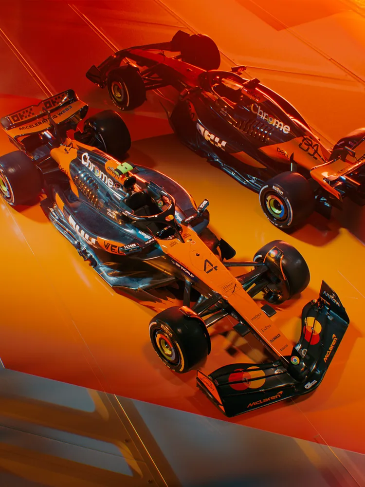

McLaren, one of the most iconic teams in Formula 1, has a rich history of innovation, success, and fierce competition. Founded in 1963 by Bruce McLaren, the team has continually pushed the boundaries of engineering and racing excellence. Over the years, McLaren has secured numerous championships and victories, becoming a force to be reckoned with in the sport. In 2024, McLaren reached a significant milestone, winning the Constructors' Championship after a remarkable season that saw the team dominate the track with unmatched precision and performance. Looking ahead to 2025, McLaren's driving lineup includes two of the most talented and promising drivers on the grid: Lando Norris, known for his speed and consistency, and rookie sensation Oscar Piastri, who has shown immense potential since his F1 debut. Together, they are poised to continue McLaren’s legacy of excellence and challenge for more championships in the seasons to come. The following image is of the Maclauren F1 car:
